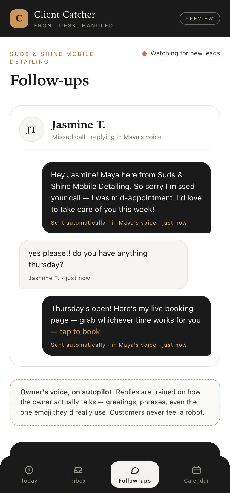

Answering service, AI receptionist, or text-back — which one should a solo owner pick?
Five ways to cover a phone you can't always answer, what each is genuinely good at, what each quietly fails at, and the six questions that separate a real vendor from a nice website.
Pick by what your callers need, not by what sounds most advanced. Upset or emergency callers need a human. Repetitive, predictable calls suit an AI receptionist. If you mostly need the conversation to survive until you're free, text-back is enough and nearly free. And if work is lost in the days after first contact — that's a follow-up problem, and none of the first three fix it.
Most owners shop this decision by comparing features. That's how you end up paying monthly for something that answers the phone beautifully and still loses the job on Thursday because nobody chased the quote.
So start somewhere else: where is the work actually going? Sit for five minutes and think through the last ten inquiries that didn't turn into money. If most died at the ring, you have a coverage problem. If most died after a friendly first conversation, you have a follow-up problem. These need different purchases.
The five options, honestly.
| Option | Typical cost | Answers live | Books the job | Follows up later |
|---|---|---|---|---|
| Voicemail | $0 | No | No | No |
| Missed-call text-back | $0–$30/mo | No | No | No |
| AI voice receptionist | $50–$300/mo, or per minute | Yes | Usually | Rarely |
| Live answering service | $250–$600/mo typical | Yes | Sometimes | No |
| Done-for-you follow-up system | One-time build + optional upkeep | Text, not voice | Yes | Yes |
Voicemail.
Still the default for most solo businesses, and the weakest option on the list — not because it's badly built, but because of how people behave. Someone who rings three trades in a row while standing in a flooded kitchen is not leaving three voicemails. Keep it as a backstop, never as the plan.
Missed-call text-back.
The best value on this page by a distance. An automatic text goes out the moment a call goes unanswered, and the conversation moves to a channel you can answer between jobs. Costs nothing on most business phone apps. What it doesn't do: qualify anyone, put anything on your calendar, or say a single word after that first message. It buys you time. It doesn't buy you the job.
AI voice receptionist.
Answers in a natural voice, works around the clock, never gets flustered, and at solo volume usually costs less than a human service. Genuinely good when your calls are repetitive: hours, service area, rough price, "can someone come Tuesday."
Where it falls down is not the voice — that argument is mostly over. It's the script. An AI that hasn't been given real, specific answers about your business will stall, loop, or invent something. And an invented answer about your pricing is worse than a missed call. It also tends to end at the booking: ask most of them what happens if the caller says "send me a price and I'll think about it," and the answer is nothing.
Live answering service.
A real person, which matters more than any spec sheet when the caller is upset, elderly, or in an actual emergency. If a meaningful share of your calls arrive stressed, this is worth the money and nothing on this list replaces it.
Where it falls down: cost climbs with volume, per-minute plans overrun in a bad week, and the job usually ends with a message being taken. The person answering your phone at 9pm is not going to chase your quote on Thursday.
Done-for-you follow-up system.
This is the one I build, so weigh accordingly. It's not a voice on the phone — it's the text reply within minutes, the qualifying questions, the booking onto your real calendar, and then the ladder of follow-ups that runs for a week until they book or politely bow out. Where it falls down: it will never comfort a distressed caller the way a person can. If that's most of your calls, buy the answering service instead.

The six questions to ask before you pay.
Copy these into an email or read them on the demo call. The answers sort real vendors from nice websites faster than any review site.
- "What happens on day three if they don't reply?" If the answer is "nothing" or a vague gesture at campaigns, you're buying a receptionist, not a system. Fine — just know which one you're buying.
- "Who owns the customer data, and what do I get if I cancel?" You want to hear: names, numbers and message history exported to you, in a normal file, on request. Get it in writing.
- "Is my texting number registered for business messaging?" In the US, unregistered business texts get filtered out silently. A vendor who looks blank at this question hasn't shipped many of these.
- "What's my total monthly bill at 60 calls and 200 texts?" Force real usage numbers. Plan price plus metered usage is the only figure that matters.
- "How will I know if it stops working?" Silent breakage is the standard failure mode. You want monitoring and a human who tells you, not a dashboard you'll never open.
- "Can I hear it handle my three worst questions?" Bring your actual awkward ones — the price nobody likes, the job you don't take, the area you don't cover. Watch it stall.
Before you sign anything, call the vendor's own demo number from a phone they don't know and behave like your worst caller: vague about the problem, unsure of the address, asking for a price they can't give. Then say "actually let me think about it" and hang up.
Now wait. What arrives over the next week is the product. If nothing arrives, you've learned the most expensive thing about them for free.
Questions owners ask about this.
Can I combine two of these?
Will customers know they're talking to an automated system?
I'm a real estate agent, not a trade. Does this change?
What if I already pay for an all-in-one platform?
How do I test one of these without risking real customers?
- Cost ranges are 2026 published market rates for single-location small businesses across AI receptionist, answering-service and all-in-one platform providers.
- US business-texting registration requirements (10DLC brand and campaign registration) apply to application-to-person messaging from business numbers.
- Capability rows reflect standard advertised functionality per category, not any single named vendor. Verify against the specific vendor before purchase.
The part that runs after the call is the part I build.
Replies inside minutes in your own words. The qualifying questions you'd ask if you were free. The booking landing on your real calendar. Then the week-long ladder that chases quietly and stops the second someone says yes. You can watch it run on a real lead before you pay me anything.
$1,500 one time, $99/month optional. Live and working in 7 days, booking appointments within 30 — or you don't pay.